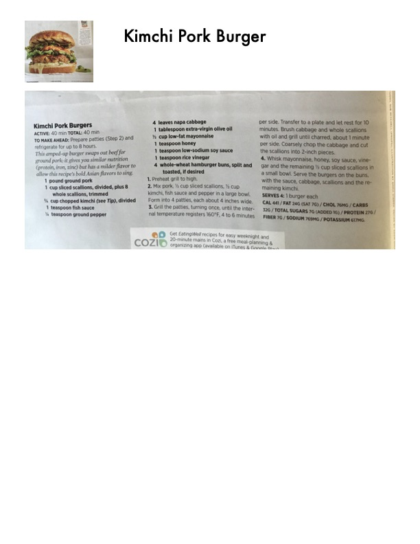

Kimchi Pork Burgers

Original cookbook page 73
This amped-up burger swaps out beef for ground pork; it gives you similar nutrition (protein, iron, zinc) but has a milder flavor to allow this recipe's bold Asian flavors to sing.
Total: 40 min
Ingredients
- 1 pound ground pork
- 1 cup sliced scallions, divided, plus 8 whole scallions, trimmed
- ½ cup chopped kimchi (see Tip), divided
- 1 teaspoon fish sauce
- ¼ teaspoon ground pepper
- 4 leaves napa cabbage
- 1 tablespoon extra-virgin olive oil
- ½ cup low-fat mayonnaise
- 1 teaspoon honey
- 1 teaspoon low-sodium soy sauce
- 1 teaspoon rice vinegar
- 4 whole-wheat hamburger buns, split and toasted, if desired
Instructions
- Preheat grill to high.
- Mix pork, ½ cup sliced scallions, ½ cup kimchi, fish sauce and pepper in a large bowl. Form into 4 patties, each about 4 inches wide.
- Grill the patties, turning once, until the internal temperature registers 160°F, 4 to 6 minutes per side. Transfer to a plate and let rest for 10 minutes. Brush cabbage and whole scallions with oil and grill until charred, about 1 minute per side. Coarsely chop the cabbage and cut the scallions into 2-inch pieces.
- Whisk mayonnaise, honey, soy sauce, vinegar and the remaining ½ cup sliced scallions in a small bowl. Serve the burgers on the buns, with the sauce, cabbage, scallions and the remaining kimchi.
Recipe #73 from collection